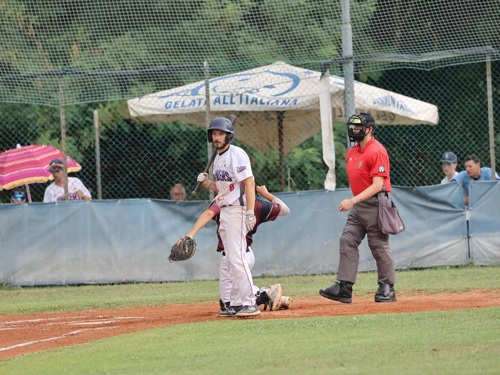
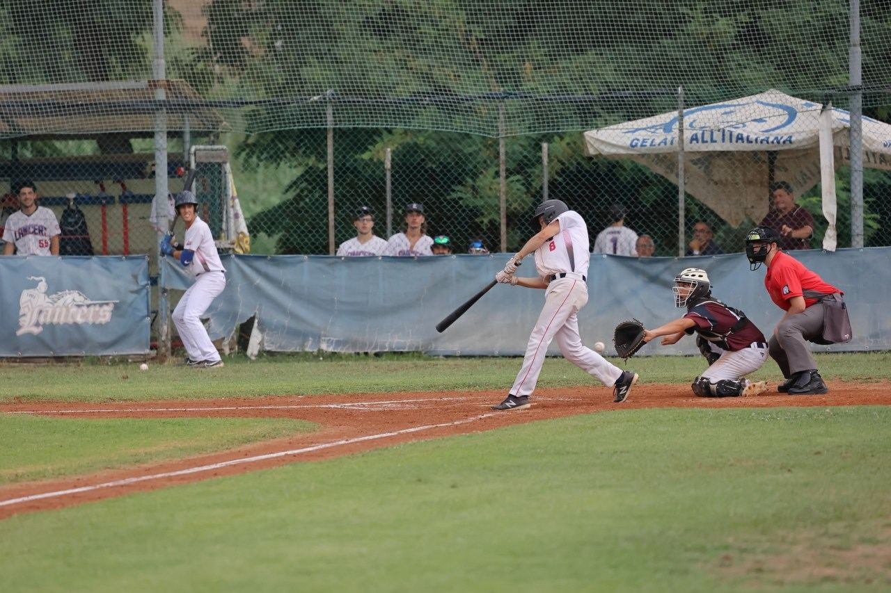
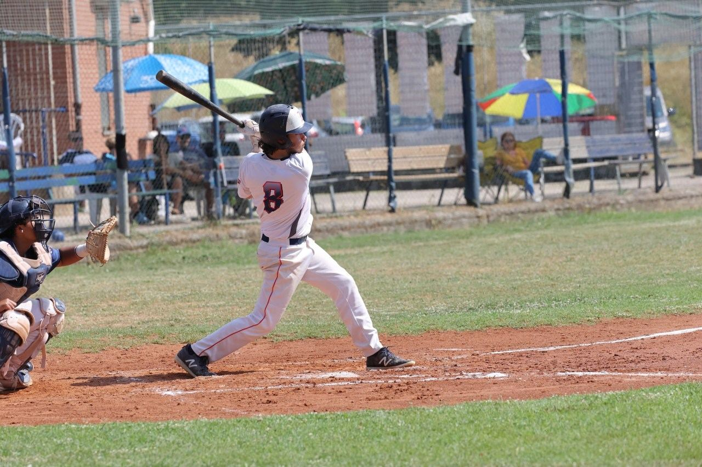

Vai al contenuto
Il Club
La società
Piazzamenti
Sponsor
Diventa nostro sponsor
Codice etico
Contatti
Squadre
Serie B
Roster Serie B
Giocatori passati
Calendario e classifica
Amatori
Torneo Lancers BAZ 40
Giovanili
Settore giovanile
Stagioni e risultati
Under 15
Calendario U15
Under 12
Calendario U12
Lancers Field
Il campo
Open Field
Orari allenamenti
Notizie
Galleria
Foto
Foto di squadra
Video
Il Baseball
Il baseball
Le regole
Al cinema
Area download
Shop
Gioca con noi
Home
/
Squadre Senior
/
Serie B
/
Panichi Tommaso
Panichi Tommaso
PANICHI
Nome
TOMMASO
Cognome
PANICHI
Data di nascita
25/11/1999
Luogo di nascita
FIRENZE
Casacca #
8
Ruolo
OF / P
Batte
DX
Lancia
DX
Altre Squadre
FIORENTINA
Statistiche
FIBS.IT



‹
›
Stagioni in prima squadra
2024
·
2025
·
2026
↑
×
‹
›